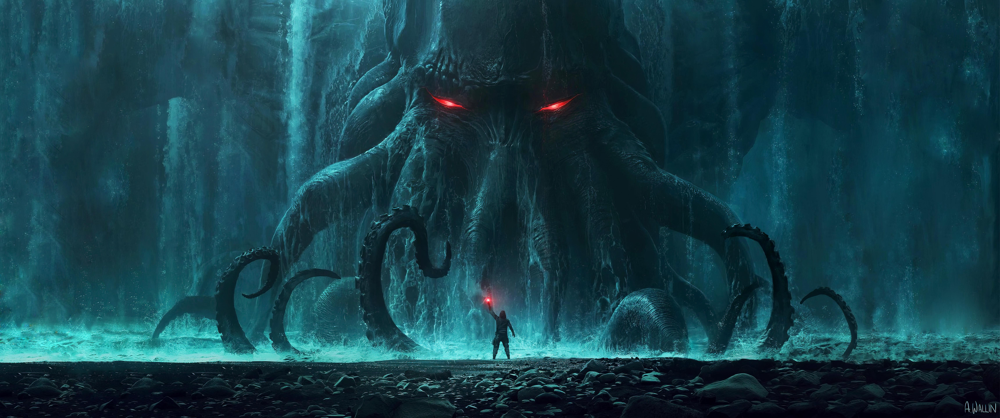
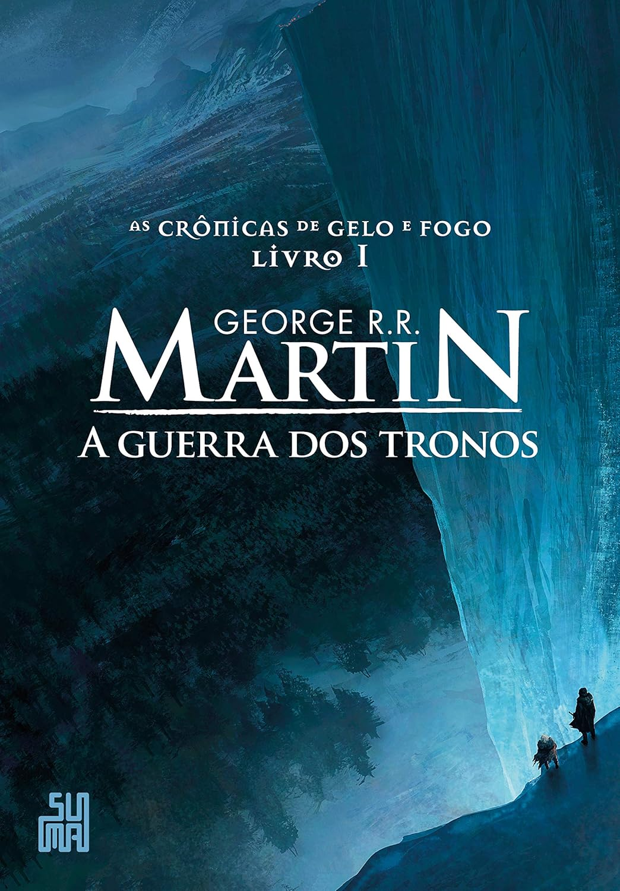
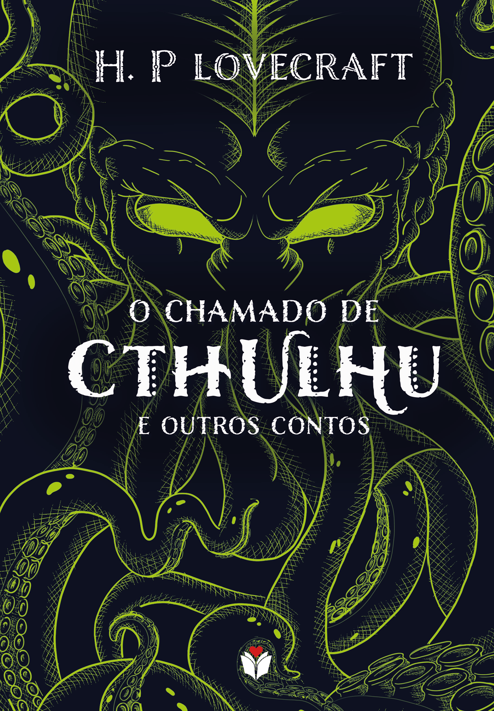
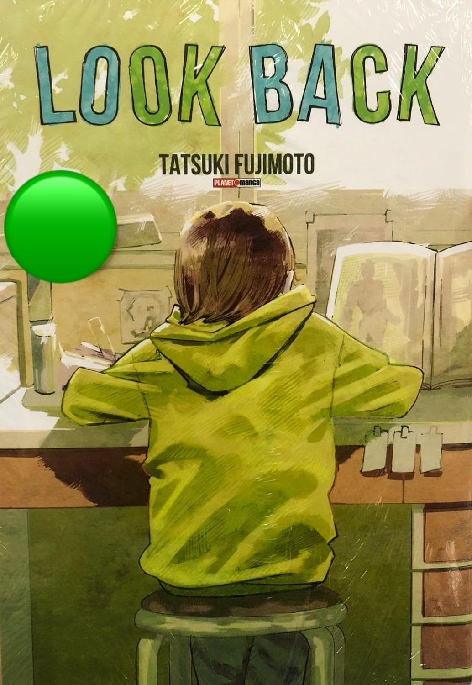
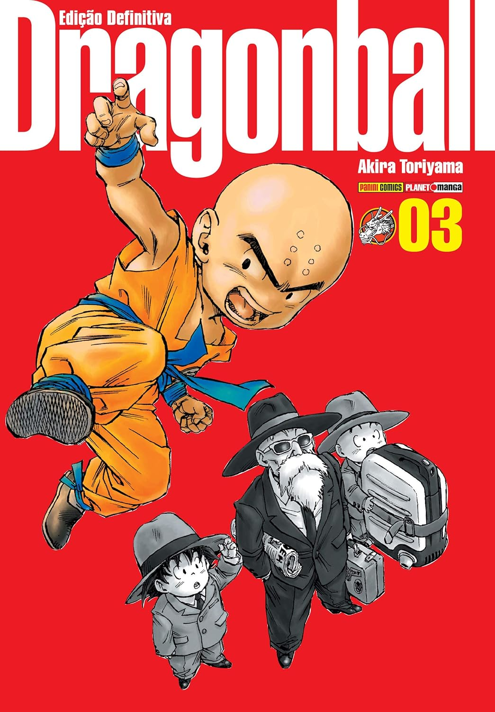
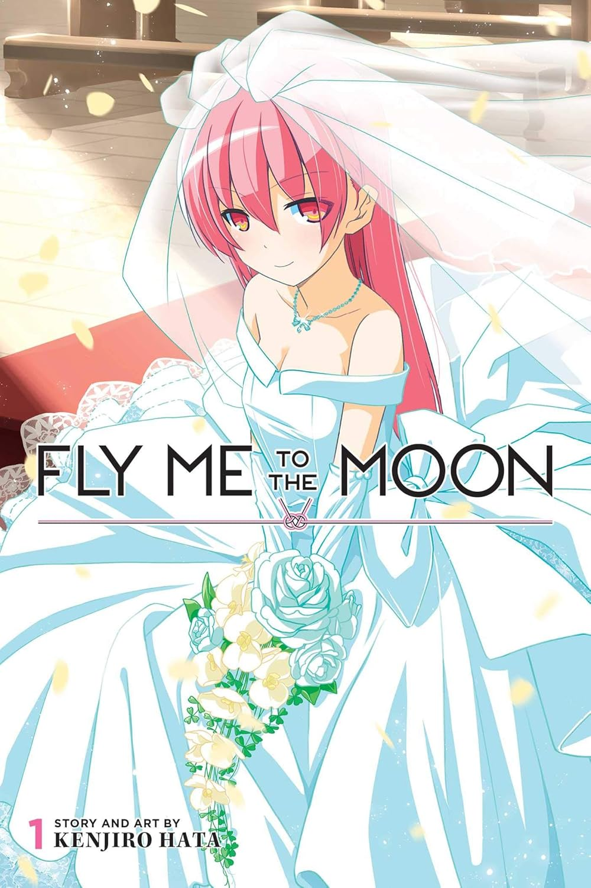

Adentre os horrores cósmicos de Lovecraft

Acompanhe a tripulação do Chapéu De Palha

Explore o poder das Esferas do Dragão com Goku e seus amigos

Caminhe entre dragões e reis em Westeros

Mergulhe no charme da Inglaterra com Elizabeth Bennet e o enigmático Mr. Darcy.
Livros populares




Mangás populares



